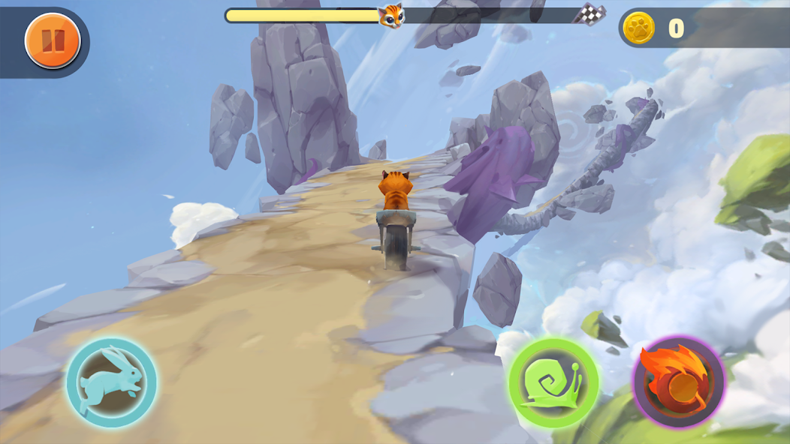
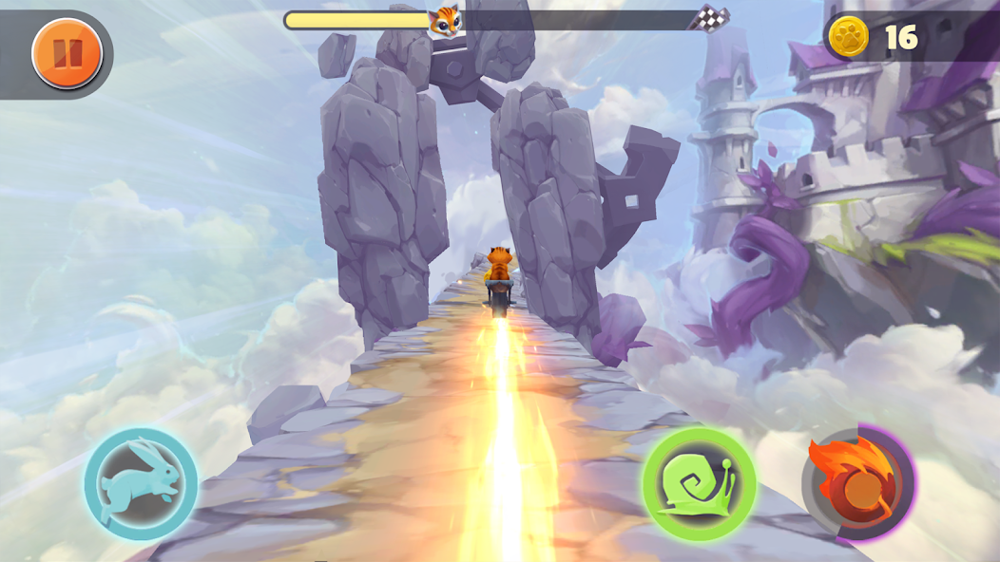
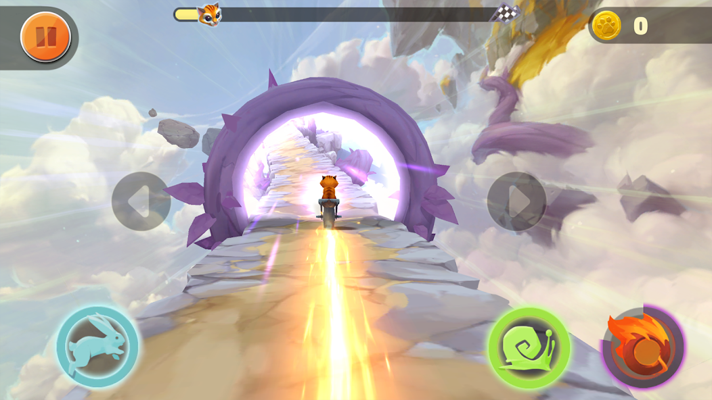

A LITTLE CAT. A LONG WAY DOWN.
Two wheels.
Twisty roads.
One brave cat.
Help a cat escape the Giant’s castle on a motorcycle. Steer, jump and find your way along winding roads high above the clouds.
Free to download · Android, iPhone & iPad
See the ride
SMALL RIDER. BIG CHALLENGE.
The road is the adventure.
No wide-open highway here. Every bend, narrow passage and jump is another reason to keep your eyes on the road.

Find your line.
Move left and right to follow the twisting track. Stay on the road and out of the abyss.

Make your move.
Time your jumps and control your speed. Accelerate when you can; slow down when you need to.

Chase the portal.
Collect coins and checkpoints along the way, then reach the portal to make your escape.
Actual gameplay screenshots from the published game.
TAKE A LOOK
A little courage.
A lot of corners.
See the floating roads, the castle and your two-wheeled escape in the gameplay trailer.
Watch on YouTubeBEFORE YOU RIDE
A few quick answers.
What kind of game is Twisty Race?
Twisty Race: Cat Bike Rider is an arcade motorcycle game set on floating fantasy roads. Help a cat escape the Giant’s castle by steering, jumping, controlling speed and reaching the portal.
Where can I play?
Download Twisty Race on Google Play for Android, or on the App Store for iPhone and iPad. Choose your store below to check availability and device compatibility.
How do I control the motorcycle?
Steer left and right to follow the road. Use the jump, acceleration and deceleration controls to handle the track. Collect coins and checkpoints as you ride toward the escape portal.
Is it free to download?
Yes, Twisty Race is free to download. The game contains ads. See your store listing for details.
How can I get help?
Email dev.ios.android@gmail.com with your device, game version and a description of the issue.
THE CLOUDS ARE CALLING
Can you master the road?
Get Twisty Race: Cat Bike Rider and give the cat a way out.
Free to download · Android, iPhone & iPad